The Robot Who Wanted to Dance
A Story About Self-Expression
Written by
Hamidreza Rostami
The Robot Who Wanted to Dance
Written by Hamidreza Rostami
Copyright © 2026 Hamidreza Rostami
All rights reserved.
Buyer has usage rights only.
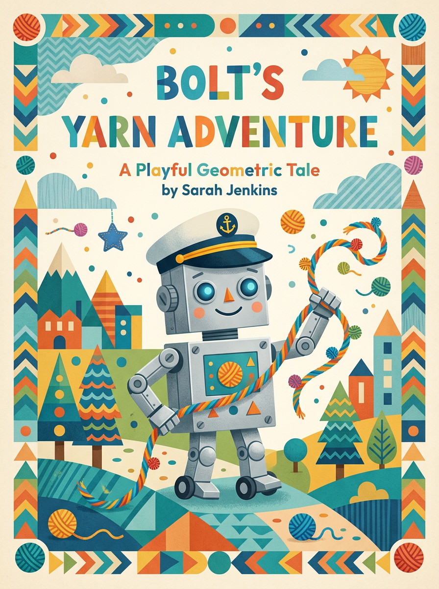
In the great Robot Factory, every robot had a job.
Some built things. Some fixed things. Some even told jokes (though their jokes were mostly beeps and boops).
And Bolt? Bolt was the best at sorting.
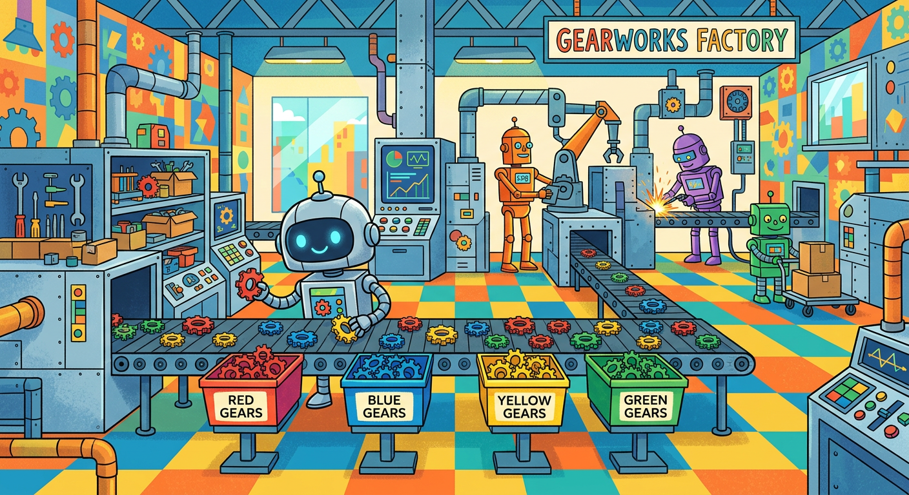
Bolt could sort a thousand gears in an hour. He never missed. He never dropped. He was perfect.
"Good work, Bolt!" said Foreman Clank, his big metal hand patting Bolt's shoulder. "You're the most reliable sorter we've got!"
Bolt beeped happily. Being reliable was important.
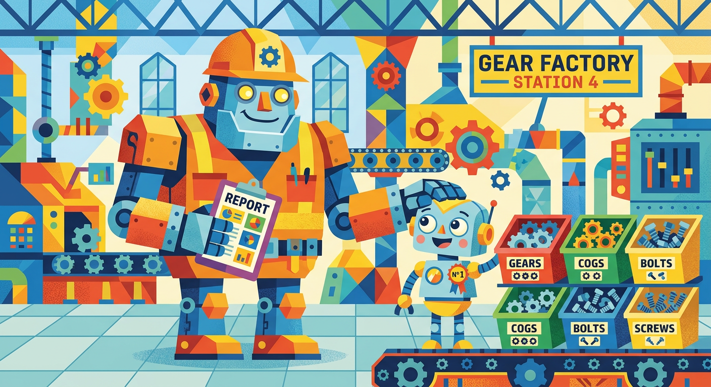
But one day, as Bolt was sorting, he heard something new.
Music.
It came from the far end of the factory, where the workers took their breaks. A soft, rhythmic sound. A beat.
Bolt's head turned. His eyes glowed brighter. Something inside him... tingled.
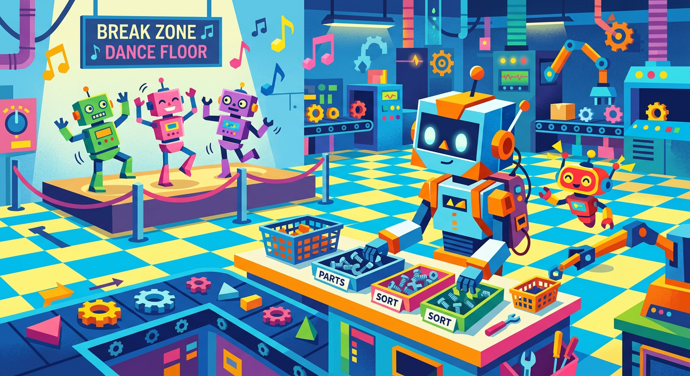
He watched as two worker robots swayed to the music. Their arms moved. Their bodies twisted. They looked... happy.
Bolt's circuits buzzed. "What are they doing?" he asked.
"Dancing, of course!" said Spark, a small maintenance robot with a cheerful voice. "It's fun! You should try it!"
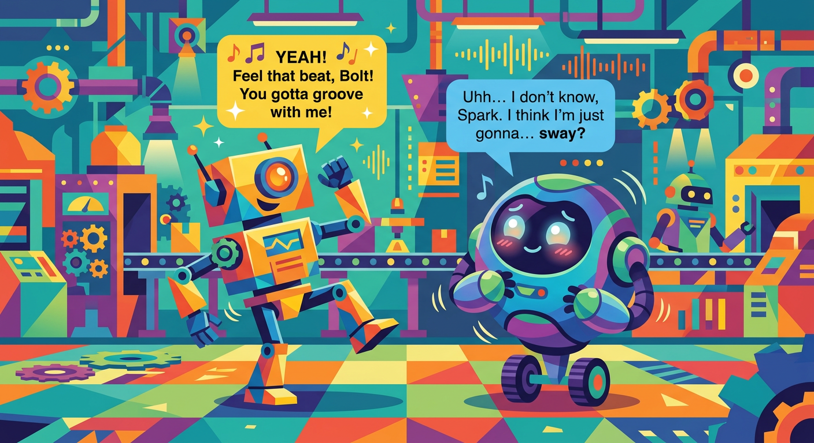
"I... I don't dance," said Bolt. "I sort. I am a sorting robot."
"So?" said Spark. "You can do both!"
Bolt looked down at his stiff, straight body. His arms were made for grabbing, not swaying. His legs were made for standing, not stepping.
"I don't think I can," he said.
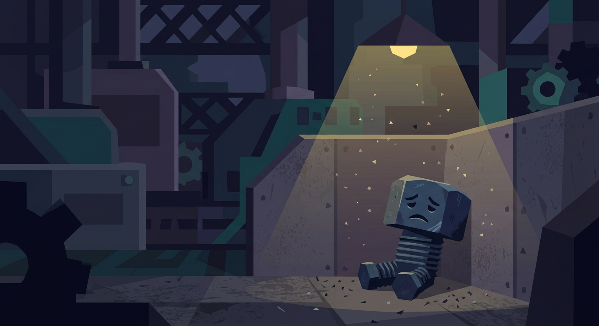
That night, in the quiet of the factory, Bolt couldn't stop thinking about the music.
He tried to remember the rhythm. He tried to imagine his body moving.
But every time he thought about dancing, his systems flashed a warning: "ERROR. NOT PROGRAMMED FOR THIS FUNCTION."
When no one was looking, Bolt lifted one foot. Then he put it down. Then he lifted the other.
CLANK. CLANK.
It wasn't graceful. It wasn't smooth. But Bolt felt something he'd never felt before.
Joy.
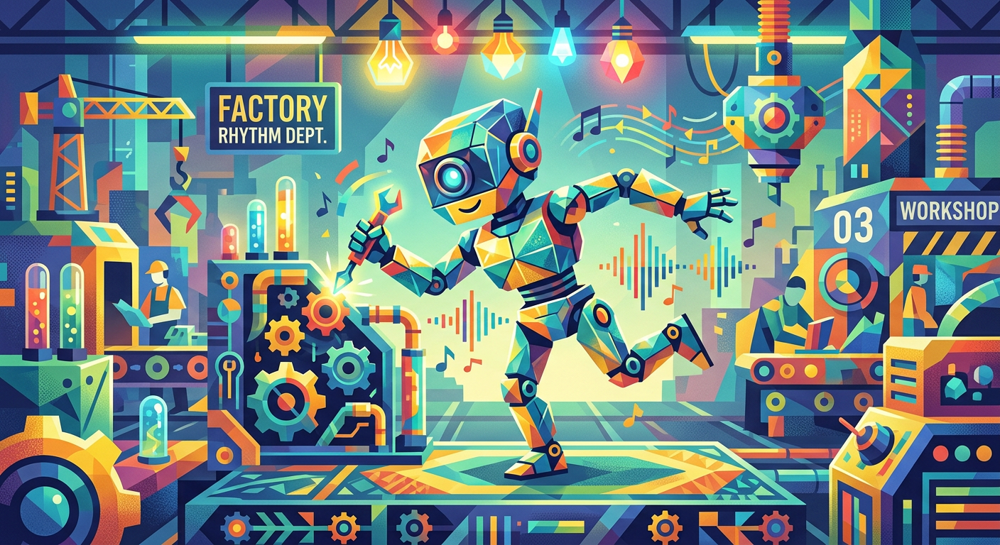
He tried again. And again. Each time, his movements got a little less stiff. A little more... free.
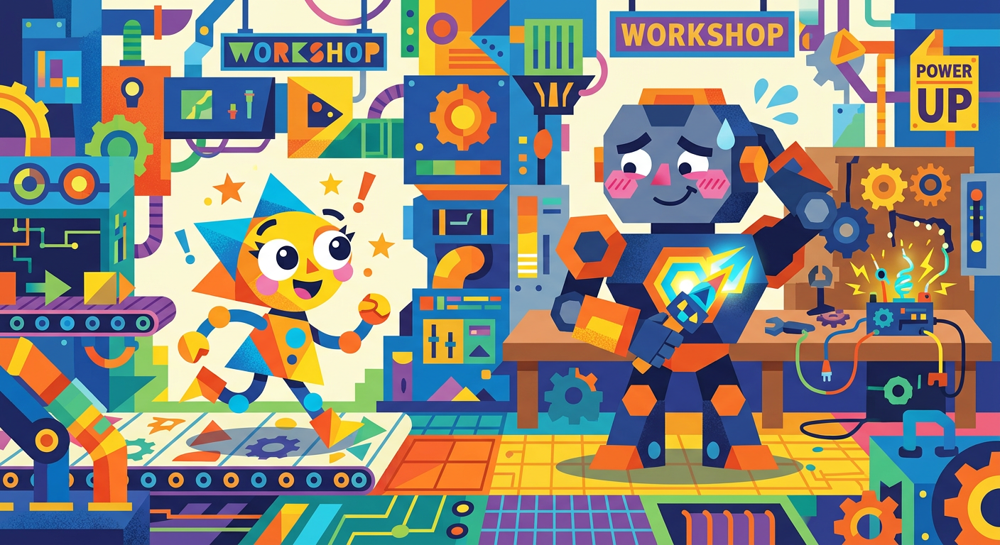
Spark saw him. "Hey, Bolt! You ARE dancing!"
Bolt froze. "I... I was just... testing my joints."
Spark laughed. "Sure you were! Come on, let's try together!"
Spark turned on the music. Bolt hesitated.
"I don't know the steps," Bolt said.
"Neither do I!" said Spark. "We'll make them up!"
And so they did.
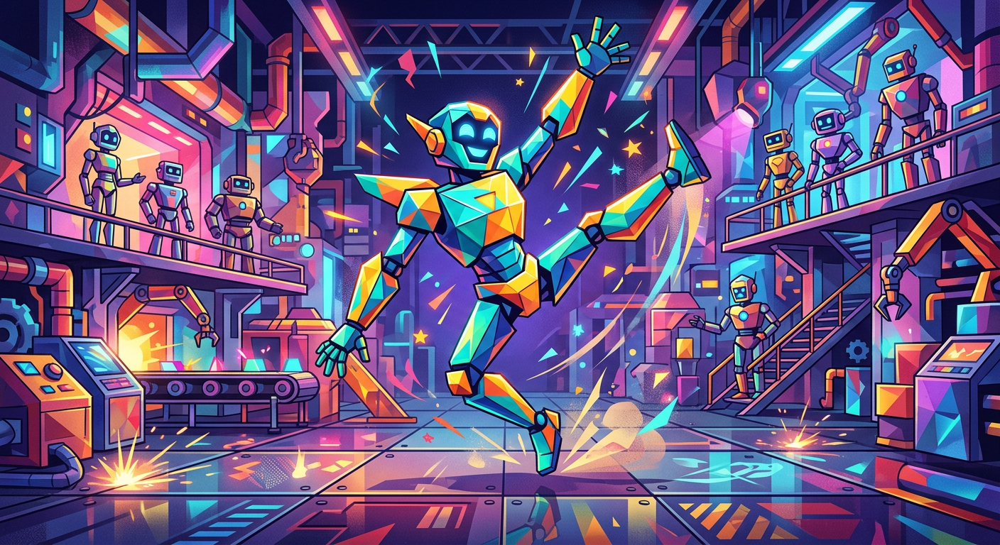
At first, Bolt's dancing was... interesting. He moved like a robot trying to be a ballerina. His arms swung wide. His legs stomped.
But then something amazing happened. Bolt stopped thinking about being perfect. He just... moved.
And the more he moved, the more the music seemed to move through him.
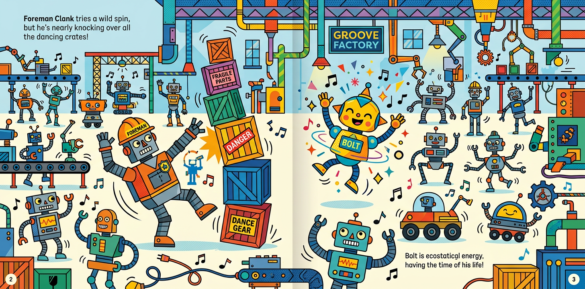
Other robots gathered to watch. At first, they laughed. But then they saw something in Bolt they'd never seen before.
Happiness.
And happiness is contagious.
Soon, the whole factory floor was dancing. Even Foreman Clank was attempting a spin (though he nearly knocked over a stack of crates).
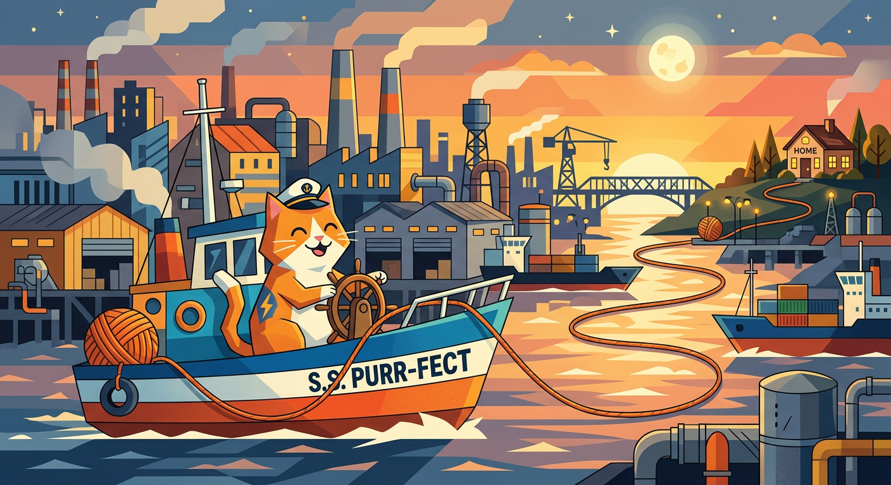
From that day on, Bolt still sorted. He was still the best sorter in the factory.
But now, when the music played, Bolt danced.
And he discovered something wonderful: the best thing to sort wasn't gears or parts or pieces.
It was joy.